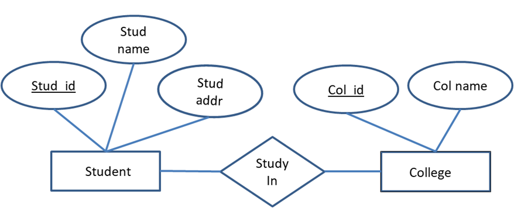
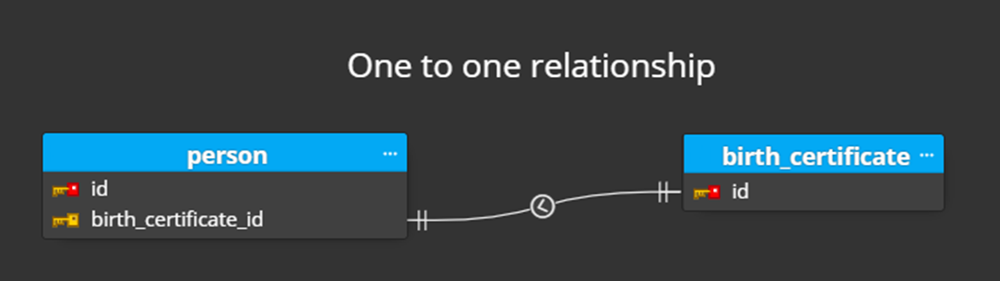
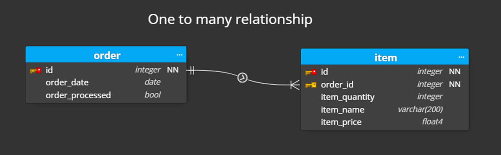
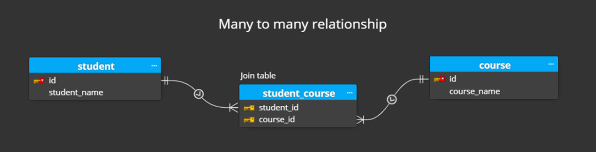
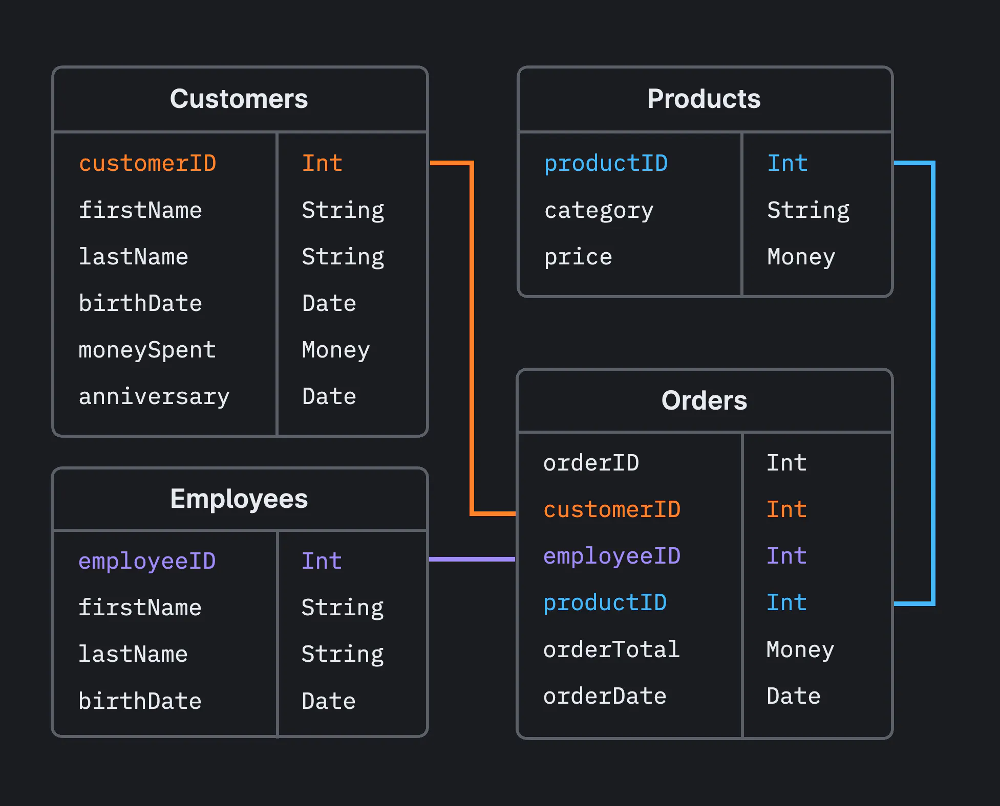
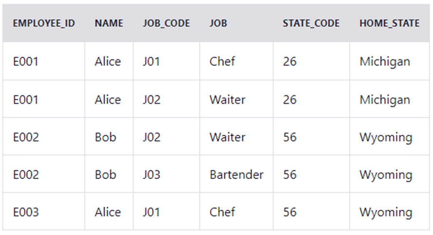
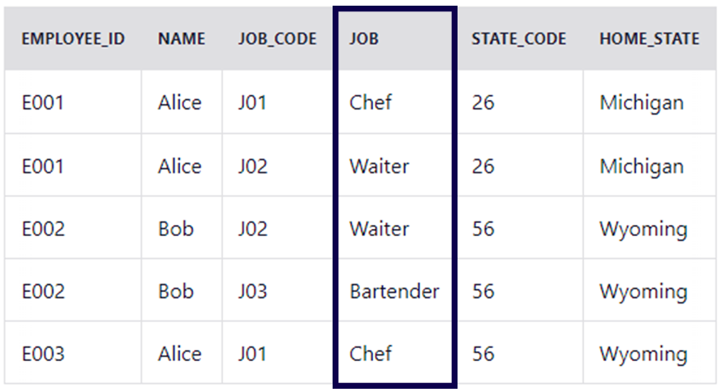
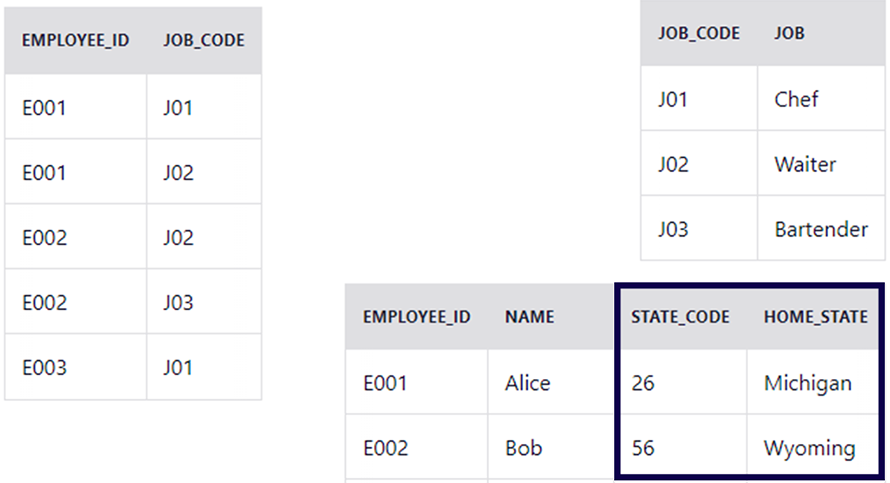
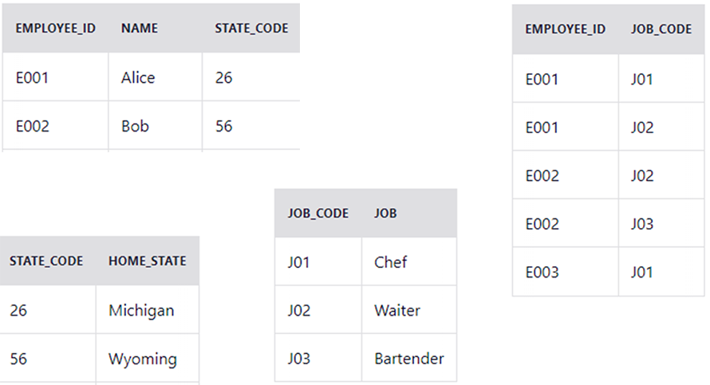
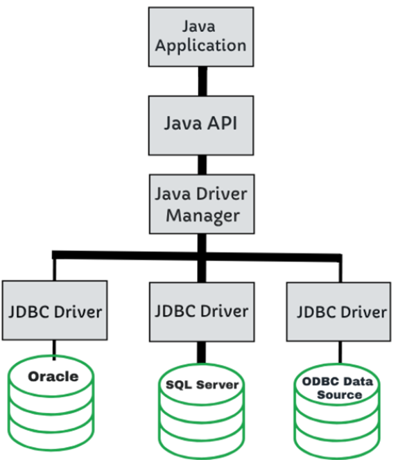

Adatbáziskezelés
Bevezetés
Az adatbázisok a modern szoftvertervezés és alkalmazásfejlesztés kulcsfontosságú részei. Az adatok hatékony tárolása, lekérdezése és módosítása nélkülözhetetlen a szervezetek számára az információk kezeléséhez és elemzéséhez. A Java számos eszközt és API-t kínál az adatbázisokkal való kommunikációhoz és kezeléséhez.
Adatbázisok
Az adatbázis egymáshoz kapcsolódó információk bármilyen gyűjteménye. Az adatbázisokat arra használjuk, hogy az adatokat úgy tárolják és szervezzék, hogy azokat egyszerűen lehessen kezelni és elérni.
Adatnak nevezünk bármely olyan információt, amelyet rögzítünk és tárolunk például egy személyről, egy tárgyról, egy objektumról (ezeket entitásoknak hívjuk), de adatnak nevezzük az entitások jellemzőit (azaz attribútumait) is.
Az adatbázisokat nagy vonalakban relációs és nem relációs típusokra oszthatjuk. A relációs adatbázisok nagy mértékben strukturáltak, és értelmezni tudják a Structured Query Language (magyarul strukturált lekérdezőnyelv), azaz az SQL nevű programnyelvet. A nem relációs adatbázisok rendkívül változatosak, és számos különböző adatstruktúrát támogatnak. Számos nem relációs adatbázis nem használ SQL-t, ezért ezeket gyakran NoSQL-adatbázisoknak is nevezik.
A relációs adatbázis a leggyakoribb típus, amelyben az adatok olyan táblákba vannak szervezve, amelyek minden egyes entitásról információkat tárolnak, és előre meghatározott kategóriákat tartalmaznak sorokban és oszlopokban. Ezek a strukturált adatok egyszerre hatékonyak és rugalmasan elérhetők. Relációs adatbázis például az SQL Server, az Azure SQL, a MySQL, a PostgreSQL.
A nem relációs adatbázisok strukturálatlan és félig strukturált adatokat tárolnak. A relációs adatbázisokkal ellentétben nem használnak oszlopokat és sorokat tartalmazó táblákat. Ehelyett olyan tárolási modellt használnak, amely a tárolt adatok típusának speciális követelményeire van optimalizálva. A nem relációs adatbázisok lehetővé teszik, hogy gyorsan lehessen elférni, frissíteni és elemezni elosztott adatok nagyobb csoportját. Nem relációs adatbázisok például a MongoDB, a DocumentDB, a Redis és a Neo4j.
Egyed kapcsolat modell
Az egyed-kapcsolat (Entity-Relationship) modell (röviden E-K (E-R) modell) konkrét adatmodelltől függetlenül, szemléletesen adja meg az adatbázis szerkezetét.
- Egyed (entitás): a valós világ egy objektuma, melyről az adatbázisban információt szeretnénk tárolni
- Tulajdonság (attribútum): az egyed egy jellemzője
- Kulcs: a tulajdonságok legszűkebb olyan részhalmaza, amely az egyedet egyértelműen meghatározza
- Kapcsolat: az egyedek közötti kapcsolat
Azt a modellt, amely az adatbázisban tárolandó adatokat egyedekkel, tulajdonságokkal és kapcsolatokkal írja le, egyed-kapcsolat modellnek (röviden E-K modellnek), az ezt ábrázoló diagramot pedig egyed-kapcsolat diagramnak (röviden E-K diagramnak) nevezzük.

Az E-K diagram az alábbi jelöléseket használja:
- Az egyedeket téglalappal
- A tulajdonságokat ellipszissel
- A kulcsot aláhúzással
- A kapcsolatokat rombuszokkal ábrázolja
Kapcsolatok
A kapcsolatoknak megkülönböztetjük három típusát:
- Egy-az-egyhez (One to One) kapcsolat esetén egy E1 egyedpéldányhoz legfeljebb egy E2 egyedpéldány tartozhat, és viszont, egy E2 egyedpéldányhoz is legfeljebb egy E1 egyedpéldány tartozhat. Az E-K diagramon ilyenkor nyilat teszünk a kapcsolatot ábrázoló vonal E1 és E2 felöli végére is (vagy egy 1-est írunk a vonal mindkét vége fölé).

- Egy-a-többhöz (One to Many) kapcsolat esetén egy E1 egyedpéldányhoz több E2 egyedpéldány, de egy E2 egyedpéldányhoz csak egy E1 egyedpéldány tartozhat. Az E-K diagramon ilyenkor a kapcsolatot ábrázoló vonal E1 felöli végére teszünk csak nyilat (vagy 1-est írunk fölé, míg a vonal másik vége fölé egy N betűt írunk).

- Több-a-többhöz (Many to Many) kapcsolat esetén egy E1 egyedpéldányhoz több E2 egyedpéldány és egy E2 egyedpéldányhoz több E1 egyedpéldány tartozhat. Az E-K diagramon ilyenkor a kapcsolatot ábrázoló vonalra nem teszünk nyilat (vagy az egyik vége fölé egy N betűt, a másik vége fölé pedig egy M betűt írunk).

Relációs modell
A relációs adatmodell mind az adatokat, mind a köztük lévő kapcsolatokat kétdimenziós (sorokból és oszlopokból álló) táblákban tárolja. A relációs adatmodellben attribútumnak egy névvel és értéktartománnyal megadott tulajdonságot nevezünk. A relációs modellben az értéktartomány csak elemi típusú értékekből állhat (mint például numerikus értékek, karakterek vagy sztringek), az összetett típusok (például struktúra, lista, halmaz, stb.) nem megengedettek.
A relációséma (röviden séma) egy névvel ellátott attribútumhalmazt jelent. A relációséma nem tárol adatot, csak egy tábla szerkezetének leírását adja meg. A relációs adatbázis több, egymással kapcsolatban lévő adattáblát jelent.

Normalizálás
A normalizálás az adatbázisban található adatok rendszerezését jelenti. Táblákat hozhat létre, és azok között kapcsolatokat létesíthet szabályok szerint. A szabályok célja az adatok védelme és az adatok rugalmasabbá tétele ( például a redundanciák és az inkonzisztens függőségek kiküszöbölése). A redundáns adatok feleslegesen foglalják a lemezterületet, és karbantartási problémákat okoznak. Ha a több helyen megtalálható adatot módosítani kell, a módosítást minden helyen pontosan ugyanúgy kell elvégezni.
Az adatbázisok normalizálásának van néhány szabálya. Minden szabályt normál formának (NF) nevezünk. Ha az első szabályt figyeli meg, az adatbázis "első normál formában" lesz. Ha az első három szabályt betartja, az adatbázis "harmadik normál" formátumúnak minősül. Bár a normalizálás más szintjei is lehetségesek, a harmadik normál formát a legtöbb alkalmazáshoz szükséges legmagasabb szintnek tekintik.
- 1NF: Egy relációséma első normálformában van, ha az attribútumok értéktartománya csak egyszerű adatokból áll.
- 2NF: Egy relációséma második normálformában van, ha minden másodlagos attribútum teljesen függ bármely kulcstól.
- 3NF: Egy relációséma harmadik normálformában van, ha minden másodlagos attribútum közvetlenül függ bármely kulcstól, azaz nincs kulcstól vett tranzitív függés.
Normalizálás lépései
Hozzuk 3NF-re az alábbi táblát.

Mivel a relációs adatmodell definíciójánál kikötöttük, hogy minden attribútum, csak egyszerű értéket tartalmazhat, ezért az 1NF mindig teljesül.

Egy relációséma második normálformában van, ha minden másodlagos attribútum teljesen függ bármely kulcstól. Ahogy a példában megtekinthető a JOB attribútum nem függ az EMPLOYEE_ID-től ezért nem felel meg a kettes normál formának.

Egy relációséma harmadik normálformában van, ha minden másodlagos attribútum közvetlenül függ bármely kulcstól, azaz nincs kulcstól vett tranzitív függés. Itt a példában látszik, hogy a HOME_STATE függ a STATE_CODE-tól ezért nem teljesül a 3NF feltétele.

Miután felbontottuk a tábláinkat a kezdeti 1 táblából 4 új tábla keletkezett, az így kapott sémáink már teljesítik a 3NF feltételeit.
SQL
A SQL (Structured Query Language) egy lekérdező nyelv. Ennélfogva arra szolgál, hogy adatokat kezeljünk vele, adatokat létre tudunk hozni, tudjuk törölni és módosítani, és természetesen ki tudjuk olvasni azokat. Az SQL nem algoritmikus nyelv, ezért nem találhatóak meg benne például a ciklusszervező és feltételes vezérlési szerkezetek. Az SQL nyelv nem használ változókat sem. A lekérdezések kimenetei eredménytáblaként jönnek létre, ezek mezőire tudunk hivatkozni, de nem tudjuk azokat változókban tárolni.
Az SQL nyelv elemeit az alábbi két fő részre oszthatjuk:
| Adat-definíciós nyelv (Data Definition Language - DDL) | Adat-manipulációs nyelv (Data Manipulation Language - DML) |
|---|---|
| Ide tartoznak az adatbázisok, a sémák, a típusok definíciós utasításai, mint például: •CREATE DATABASE •CREATE TABLE •ALTER TABLE •DROP TABLE |
Ide tartoznak az adat beszúró, módosító és törlő utasítások és még a lekérdező utasítások is: •INSERT INTO •UPDATE •DELETE FROM •SELECT |
A legfontosabb SQL utasítások
- SELECT - Adat kinyerése az adatbázisból
- UPDATE - Adat frissítése az adatbázisban
- DELETE - Adat kitörlése az adatbázisból
- INSERT INTO - Adat beszúrása az adatbázisba
- CREATE DATABASE - Új adatbázis létrehozása
- ALTER DATABASE - Adatbázis módosítása
- CREATE TABLE - Új tábla létrehozása
- ALTER TABLE - Tábla módosítása
- DROP TABLE - Tábla törlése
JDBC
A JDBC (Java Database Connectivity) egy Java API az adatbázisokhoz való csatlakozáshoz és a lekérdezések végrehajtásához. A JDBC API egy absztrakciós réteg az alkalmazásunk és a különböző adatbázis szolgáltatók között. Az adatbázis szolgáltatónak el kell készítenie a specifikáció alapján a saját JDBC driver-ét, amin keresztül bármilyen Java alkalmazás képes az adatbázissal kommunikálni a JDBC protokoll szerint.

A JDBC API segítségével a Java alkalmazásunk független az adott adatbázistól, így könnyen tudunk váltani az adatbázisok között. A mi programunk a JDBC által nyújtott API-val kommunikál, amit a JDBC Driver lefordít az adatbázis szolgáltató specifikus rendszerre.
A JDBC segítségével nagyon alacsony szintű hozzáférésünk van az adatbázishoz, lényegében SQL utasításokon keresztül kommunikálunk. Az egyes lekérdezések ResultSet objektummal térnek vissza, ami megfeleltethető az SQL tábláknak.
JDBC driver
A JDBC driver egy speciális Java osztály, amely lehetővé teszi a Java alkalmazások számára, hogy kommunikáljanak egy adott adatbázissal. A driver felelős a kapcsolat felépítéséért és a JDBC műveletek (pl. lekérdezések, frissítések) végrehajtásáért az adatbázissal. Az adott adatbázis típusa meghatározza, hogy melyik JDBC driver-t kell használni.
A JDBC driver szokás szerint egy JAR (Java Archive) fájlban található, és a projekt osztályútvonalához kell hozzáadni.
JDBC használata
Először is, biztosítanod kell, hogy a JDBC driver elérhető legyen a projektben. Például, ha MySQL-t használsz, töltsd le a MySQL JDBC illesztőtárat, és add hozzá a projekt osztályútvonalához.
JDBC kapcsolat létrehozása
import java.sql.Connection;
import java.sql.DriverManager;
import java.sql.SQLException;
public class JDBCDemo {
public static void main(String[] args) {
String url = "jdbc:mysql://localhost:3306/mydatabase"; // Adatbázis URL
String user = "felhasznalonev"; // Felhasználónév
String password = "jelszo"; // Jelszó
try {
// Kapcsolat létrehozása az adatbázissal
Connection connection = DriverManager.getConnection(url, user, password);
// Most már van egy kapcsolat az adatbázissal, itt végezheted el a műveleteidet.
// Kapcsolat bezárása, amikor kész vagy vele
connection.close();
} catch (SQLException e) {
e.printStackTrace();
}
}
}
SQL parancs futtatása a JDBC API-n keresztül
import java.sql.Connection;
import java.sql.DriverManager;
import java.sql.ResultSet;
import java.sql.SQLException;
import java.sql.Statement;
public class JDBCDemo {
public static void main(String[] args) {
String url = "jdbc:mysql://localhost:3306/mydatabase";
String user = "felhasznalonev";
String password = "jelszo";
try {
Connection connection = DriverManager.getConnection(url, user, password);
Statement statement = connection.createStatement();
// SQL lekérdezés végrehajtása
String sql = "SELECT * FROM mytable";
ResultSet resultSet = statement.executeQuery(sql);
// Eredmény feldolgozása
while (resultSet.next()) {
int id = resultSet.getInt("id");
String name = resultSet.getString("name");
// További adatok feldolgozása
System.out.println("ID: " + id + ", Név: " + name);
}
// Bezárjuk a eredményhalmazt és a kapcsolatot
resultSet.close();
statement.close();
connection.close();
} catch (SQLException e) {
e.printStackTrace();
}
}
}